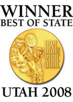
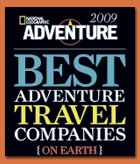

Environmental Ethics
Our Awards
Travel to Rafting has received numerous awards for business ethics and community involvement.  Including being the only Moab based outfitter to be recognized by National Geographic as one of the “Best Outfitter on Earth.” SGE also won The Utah’s Best of State Award for in the River Outfitter category for its unrivaled customer service. The Best of State awards were created to recognize outstanding organizations and businesses in Utah. Top Guides Jose and Arlo Tejada have both won River Guide of the Year from Utah Outdoors.
Environmental responsibility is an ethic everyone in the company lives and teaches. We leave no trace of our passage; we “take only pictures and leave only footprints.” We have a much extended recycling program. This includes reusing all plastics on trips from Gatorade bottles to sour cream containers. Returned brochures are sent to travel agents and are placed in rack holders. SGE recycles everything else. All faxes and printers use recycled paper. All our meals are prepared fresh. Many of our vegetables are from our own garden. We commission local farmers to grow fresh produce, keeping jobs at home. Our meats and chesses are from local Ye Ol’ Geezer Meats in Moab, Utah.
Travel to Rafting guides and staff are encouraged to contribute to the local community in a variety of ways. We pay for half of all volunteer hours anyof our employees participate in. We provide a community service board and transportation to help get employees to participate in local activities and events. We sponsors a huge variety of local events and non profit organizations including, American Rivers, the Lance Armstrong Foundation, National River Cleanup, The Nature Conservancy, Skinny Tire Festival, the Lance Armstrong Foundation, Moab Half Marathon, Moab Teen Center, Pumpkin Chucking Festival, Western Stars Cowboy Poetry Gathering, The Moab Multi Cultural Center, Banff Film Festival, Moab Century Tour, Moab’s Red Hot 50k Event, Moab Canyons Endurance Ride, Canyonlands Field Institute, KZMU, and Seekhaven.